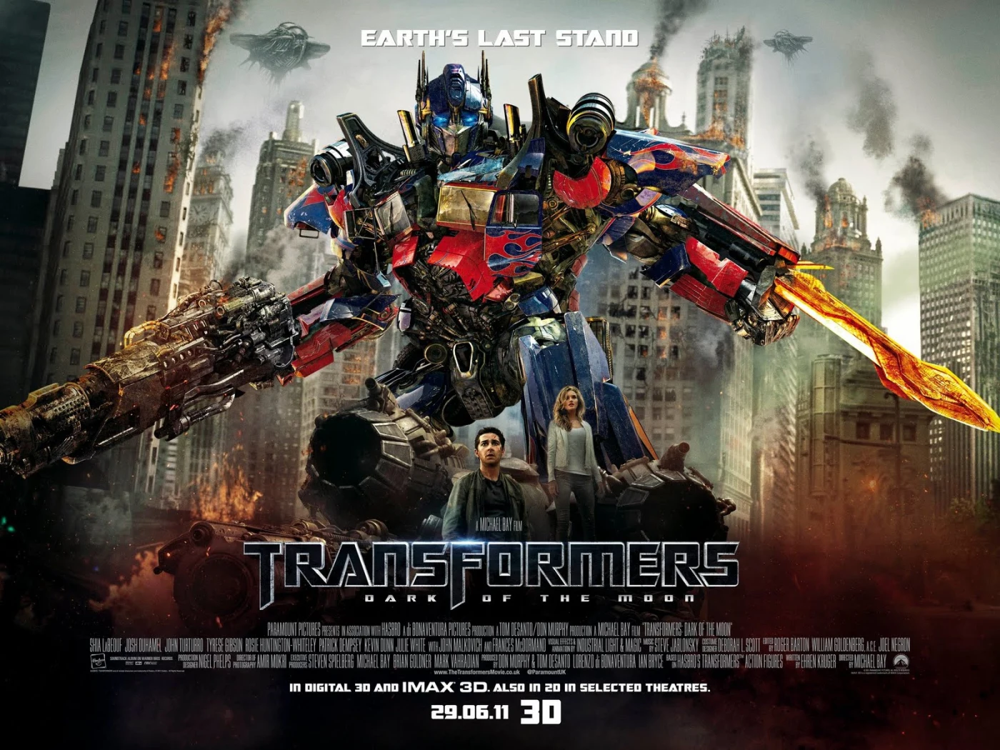

Transformers 2007

No primeiro filme da franquia, dirigido por Michael Bay, a Terra se torna o campo de batalha entre duas raças alienígenas em guerra: os Autobots e os Decepticons. Os Autobots, liderados por Optimus Prime, chegam ao nosso planeta em busca do AllSpark, uma fonte de poder que os Decepticons também desejam para dominar o universo. Enquanto isso, um adolescente chamado Sam Witwicky descobre um artefato valioso que o coloca no meio desse conflito épico. Com a ajuda dos Autobots e de uma força militar especial, Sam e seus amigos se unem para proteger a Terra da ameaça dos Decepticons e garantir que o AllSpark não caia em mãos erradas.
Transformers: Dark side of the Moon (2011)

Neste terceiro capítulo da série, dirigido novamente por Michael Bay, descobrimos que os Autobots têm uma longa história com a humanidade, incluindo sua participação na missão Apollo 11 em 1969. Quando uma espaçonave Autobot perdida é encontrada na Lua, uma nova corrida pelo poder começa. Os Decepticons planejam usar a tecnologia da espaçonave para iniciar um plano devastador que poderia mudar o equilíbrio da guerra. Sam Witwicky, agora mais envolvido com os Autobots do que nunca, precisa liderar uma vez mais o esforço para impedir os Decepticons de concretizarem seu plano maligno, desencadeando uma batalha final épica em meio às ruas de Chicago.
Ambos os filmes combinam ação frenética, efeitos visuais impressionantes e a interação entre humanos e os icônicos robôs transformáveis para criar histórias emocionantes repletas de aventura, suspense e heroísmo.